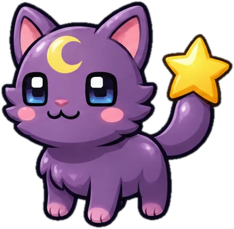

 Psychic
Psychic Fire
FireTap a stage to read its story.
A tiny round-eared kitten with deep purple fur and a crescent-moon mark pressed onto its forehead, Lunkit holds a little gold star in one raised paw and watches the world with huge round eyes. It is found in Amber Desert's cooler pre-dawn hours, sitting on flat rocks and staring straight up - tracking stars that adults cannot see. When it spots one it likes, it points the gold star toward it and chirps once, quietly. Guardians swear that every wish whispered near a Lunkit comes back to you as a question.
Field note: Lunkit only sleeps during the brief desert noon - it spends every dawn and dusk sitting upright, watching the sky.
Amber Desert. Lunkit and its family are found in the Amber Desert. See everyone who lives there.
Share a Bond Food that matches its types to become friends. Lunkit loves:
A Bond Food is not a trick. It joins your spirit with the Kimuro's spirit, and only when it chooses you.
Print the Kimuro adventure packs: mazes, cards, a board game and Bond Mark medals.
See the printable packs